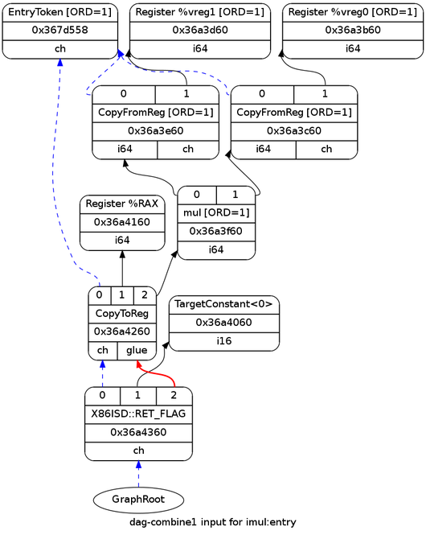
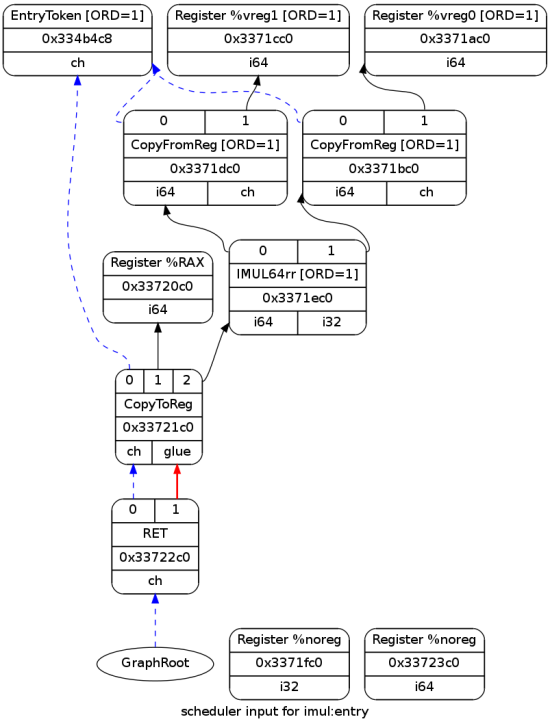

深入理解 LLVM code generator (一)
LLVM
在上一篇文章中， 我介绍了指令在 LLVM 中从源语言编译为机器代码时所采用的各种形式。 本文简要地提到了 LLVM 中的许多层，每一层都很有趣且不平凡。
在这里，我想重点讨论最重要和最复杂的层之一——代码生成器，特别是指令选择机制。 简单来说，代码生成器的任务是将高级的、目标无关的 LLVM IR 转换为低级的、目标相关的机器语言。 指令选择是将 IR 中的抽象操作映射到目标体系结构的具体指令的过程。
本文将通过一个简单的示例来展示实际的指令选择机制(LLVM 中的 ISel)。
入门
这是一个乘法 IR 的例子。
define i64 @imul(i64 %a, i64 %b) nounwind readnone {
entry:
%mul = mul nsw i64 %b, %a
ret i64 %mul
}它是用 Clang (-emit-llvm 选项)在 x64 机器上从以下 c 代码编译而成的。
long imul(long a, long b) {
return a * b;
}代码生成器完成的第一件事是将 IR 转换为 Selection DAG。 这是最初的 DAG。

这里并没有太多值得关注的内容，所有类型对于目标架构来说都是合法的； 因此，这个 DAG 可以直接用于指令选择。
指令选择 pattern
指令选择可以说是代码生成阶段最重要的部分。 它的任务是将合法的 Selection DAG 转换为包含 target machine code 的新 DAG。 换句话说，就是输入抽象的、独立于目标的 DAG 输出具体的、依赖于目标的新 DAG。 为此，LLVM 使用由两个主要步骤组成的 pattern 匹配算法。
第一个步骤是离线进行的，即 发生在 LLVM 本身正在构建时，涉及 TableGen 工具，该工具根据指令的定义生成 pattern 匹配表。 TableGen 是 LLVM 生态系统的重要组成部分，在指令选择中起着特别重要的作用， 因此花几分钟讨论它是值得的(官方文档TableGen Overview)。
TableGen 的问题在于，它的一些用途非常复杂(我们很快就会看到，指令选择是最严重的问题之一)，以至于很容易忘记其核心思想是多么简单。 LLVM 开发人员很久以前就意识到，必须为每个新目标编写大量重复代码。 比如，同一条机器指令被用于代码生成、汇编程序、反汇编程序、优化器和许多其他地方。 每一次这样的使用都会产生一个“表”，将指令映射到某些信息。 如果我们可以在一个位置定义所有指令，收集所有我们需要的关于它们的有用信息，然后自动生成所有表，这不是很好吗？ 这正是 TableGen 生来就要做的。
让我们检查与本文相关的指令定义（取自lib/Target/X86/X86InstrArithmetic.td并重新格式化）：
def IMUL64rr : RI<0xAF, MRMSrcReg, (outs GR64:$dst),
(ins GR64:$src1, GR64:$src2),
"imul{q}\t{$src2, $dst|$dst, $src2}",
[(set GR64:$dst, EFLAGS,
(X86smul_flag GR64:$src1, GR64:$src2))],
IIC_IMUL64_RR>,
TB;如果你觉得这像一堆垃圾，别担心，大家的第一印象都是如此。 为了充分提取通用代码，TableGen 开发了一些高级功能，如多重继承、模板等。 所有这些都使定义有些难以理解，如果要查看 IMUL64rr 的“裸”定义，可以从 LLVM 源代码树的根目录运行它：
$ llvm-tblgen lib/Target/X86/X86.td -I=include -I=lib/Target/X8613.5 MB 的输出只包含简单的 defs 条目，TableGen 后端可以从中获取所需的内容。IMUL64rr 的 def 大约有 75 个字段，但我们只关注本文需要的内容。
我们讨论的最重要的字段是上面的 def 中的第六个模板参数。
[(set GR64:$dst, EFLAGS,
(X86smul_flag GR64:$src1, GR64:$src2))],这是匹配 IMUL64rr 的 pattern。 它本质上是一个描述要匹配的 DAG 的 s-expression。 在这种情况下，它大致意味着：匹配一个带有两个 64 位 GPR(通用寄存器)子节点的 X86ISD:：SMUL 节点（包含在 X86smul_flag 的定义中）， 该节点返回两个结果，一个分配给目标 GPR，另一个分配给状态寄存器。 当自动指令选择在 DAG 中看到这样的序列时，就将其与 IMUL64rr 指令相匹配。
细心的读者会注意到我在这里有点说谎。 如果此模式匹配的节点是 X86ISD::SMUL，那么它如何匹配上面所示的具有 ISD::MUL 节点的 DAG 呢? 事实上,它并不能匹配。 稍后我将展示与 DAG 实际匹配的模式，但我认为演示指令定义很重要，以便稍后讨论如何将所有模式组合在一起。
那么 ISD::MUL 和 X86ISD::SMUL 之间有什么区别？ 前者不关心受乘法影响的标志位，而后者关心。 C 语言中的乘法通常不关心标志位，因此选择了 ISD::MUL。 但是 LLVM 提供了一些特殊的内在函数，例如 llvm.smul.with.overflow，其中可以从操作中返回溢出标志。 对于这些（可能还有其他用途），LLVM 定义了 X86ISD::SMUL 节点。
那么，实际匹配 ISD::MUL 节点的是什么呢? 这个模式来自lib/Target/X86/X86InstrCompiler.td。
def : Pat<(mul GR64:$src1, GR64:$src2),
(IMUL64rr GR64:$src1, GR64:$src2)>;这是一个匿名 TableGen 记录，它定义了一个独立于特定指令的 pattern。 该 pattern 定义了从 输入 DAG 到输出 DAG 的映射，后者包含选定的指令。 我们不关心如何手动调用此 pattern，因此 TableGen 允许我们定义匿名 pattern。 下面是 include/llvm/Target/TargetSelectionDAG.td 中一个有趣的片段，其中定义了 pattern 类（及其特化的 Pat 类）：
// Selection DAG Pattern Support.
//
// Patterns are what are actually matched against by the target-flavored
// instruction selection DAG. Instructions defined by the target implicitly
// define patterns in most cases, but patterns can also be explicitly added when
// an operation is defined by a sequence of instructions (e.g. loading a large
// immediate value on RISC targets that do not support immediates as large as
// their GPRs).
//
class Pattern<dag patternToMatch, list<dag> resultInstrs> {
dag PatternToMatch = patternToMatch;
list<dag> ResultInstrs = resultInstrs;
list<Predicate> Predicates = []; // See class Instruction in Target.td.
int AddedComplexity = 0; // See class Instruction in Target.td.
}
// Pat - A simple (but common) form of a pattern, which produces a simple result
// not needing a full list.
class Pat<dag pattern, dag result> : Pattern<pattern, [result]>;这段代码顶部的大注释很有帮助，它描述了与 IMUL64rr 完全相反的情况。 在我们的例子中，在指令内定义的模式实际上更复杂，而基本模式是在指令外用 pattern 定义的。
pattern 匹配机制
TableGen 支持多种类型的 pattern 来描述目标机器支持的指令。 我们已经学习了在指令定义中隐式定义的 pattern 和显式定义的独立 pattern。 此外，还存在指定 C++函数的 complex pattern，以及包含任意 C++代码片段的 pattern fragments。 如果您感兴趣，include/llvm/Target/TargetSelectionDAG.td 中的注释对这些类型提供了描述。
之所以在 TableGen 中混合 c++ 代码是可行的， 是因为 TableGen 最终被翻译成一个 c++方法(面向特定 DAG ISel 后端)，并嵌入到目标对 SelectionDAGISel 接口的实现中。
更具体地说，顺序是：
通用的
SelectionDAGISel::DoInstructionSelection方法针对每个 DAG 节点调用Select函数。Select是一个抽象方法，由具体的后端实现。例如X86DAGToDAGISel:：Select。X86DAGToDAGISel::Select会拦截一些节点进行手动匹配，但将大部分工作委托给X86DAGToDAGISel:：SelectCode。X86DAGToDAGISel::SelectCode由 TableGen [4] 自动生成，包含匹配表， 然后调用通用SelectionDAGISel::SelectCodeCommon在匹配表中查找匹配项。
什么是匹配器表?从本质上说，它是一个“程序”，以某种特定于指令选择的“字节码”编写。 为了在保持效率的同时兼顾灵活性，TableGen 将后端定义的所有 pattern 混合在一起，并生成一个程序，给定任意的 DAG，该程序将找出与之匹配的 pattern。 SelectionDAGISel::SelectCodeCommon 充当这个字节码的解释器。
不幸的是，用于 pattern 匹配的字节码在任何地方都没有文档。 要了解它是如何工作的，除了查看解释器代码和为某些后端生成的字节码之外，别无他法。
示例
让我们学习一下示例 DAG 中的 ISD::MUL 节点是如何匹配的。 为此，将 -debug 选项传递给 llc， 这使其转储整个 code generate 过程的详细调试信息， 每个 DAG 节点的选择过程都可以被追踪。 下面是与 ISD::MUL 节点有关部分：
Selecting: 0x38c4ee0: i64 = mul 0x38c4de0, 0x38c4be0 [ORD=1] [ID=7]
ISEL: Starting pattern match on root node: 0x38c4ee0: i64 = mul 0x38c4de0, 0x38c4be0 [ORD=1] [ID=7]
Initial Opcode index to 57917
Match failed at index 57922
Continuing at 58133
Match failed at index 58137
Continuing at 58246
Match failed at index 58249
Continuing at 58335
TypeSwitch[i64] from 58337 to 58380
MatchAddress: X86ISelAddressMode 0x7fff447ca040
Base_Reg nul Base.FrameIndex 0
Scale1
IndexReg nul Disp 0
GV nul CP nul
ES nul JT-1 Align0
Match failed at index 58380
Continuing at 58396
Match failed at index 58407
Continuing at 58516
Match failed at index 58517
Continuing at 58531
Match failed at index 58532
Continuing at 58544
Match failed at index 58545
Continuing at 58557
Morphed node: 0x38c4ee0: i64,i32 = IMUL64rr 0x38c4de0, 0x38c4be0 [ORD=1]
ISEL: Match complete!
=> 0x38c4ee0: i64,i32 = IMUL64rr 0x38c4de0, 0x38c4be0 [ORD=1]这里提到的索引指向匹配表的某一项。 您可以在生成的 X86GenDAGISel.inc 文件的每一行开头的注释中看到它们。 下面是表格的开头部分:
// The main instruction selector code.
SDNode *SelectCode(SDNode *N) {
// Some target values are emitted as 2 bytes, TARGET_VAL handles
// this.
#define TARGET_VAL(X) X & 255, unsigned(X) >> 8
static const unsigned char MatcherTable[] = {
/*0*/ OPC_SwitchOpcode /*221 cases */, 73|128,103/*13257*/, TARGET_VAL(ISD::STORE),// ->13262
/*5*/ OPC_RecordMemRef,
/*6*/ OPC_RecordNode, // #0 = 'st' chained node
/*7*/ OPC_Scope, 5|128,2/*261*/, /*->271*/ // 7 children in Scope在位置 0 有一个 OPC_SwitchOpcode 操作， 这是关于 Opcode 的一个巨大的 switch 表，接下来是一系列 case， 每个 case 都从它的 size 开始(如果匹配失败，匹配器就知道要去哪里开始新的匹配)，然后是 Opcode。 例如，如上面的清单所示，表中的第一个 case 的 Opcode 是ISD::STORE， 其 size 为 13257(由于表是基于字节的，所以 size 采用特殊的变长编码方式编码)。
查看 llc 的输出，MUL 节点的匹配从偏移量 57917 开始。 这是表的相关部分：
/*SwitchOpcode*/ 53|128,8/*1077*/, TARGET_VAL(ISD::MUL),// ->58994
/*57917*/ OPC_Scope, 85|128,1/*213*/, /*->58133*/ // 7 children in Scope正如预期的那样，这是 ISD::MUL 的 case。 这个 case 的匹配从 OPC_Scope 开始，它是一个指令，指示解释器保存当前状态。 如果在该 Scope 内匹配失败，则可以恢复状态以继续匹配下一个 case。 在上面的片段中，如果在该 Scope 内匹配失败，它将在偏移量 58133 处继续匹配。
你可以在 llc 输出中看到:
Initial Opcode index to 57917
Match failed at index 57922
Continuing at 58133在 57922 时，解释器尝试将节点的子节点匹配到 ISD::LOAD， 但失败了，并跳转到作用域指示的 58133。 同样，可以跟踪匹配过程的其余部分 - 按照 llc 输出和匹配表作为参考。 不过，在偏移量 58337 处发生了一些有趣的事情。 这是相关的表格部分：
/*58337*/ OPC_SwitchType /*2 cases */, 38, MVT::i32,// ->58378
/*58340*/ OPC_Scope, 17, /*->58359*/ // 2 children in Scope
/*58342*/ OPC_CheckPatternPredicate, 4, // (!Subtarget->is64Bit())
/*58344*/ OPC_CheckComplexPat, /*CP*/3, /*#*/0, // SelectLEAAddr:$src #1 #2 #3 #4 #5
/*58347*/ OPC_MorphNodeTo, TARGET_VAL(X86::LEA32r), 0,
1/*#VTs*/, MVT::i32, 5/*#Ops*/, 1, 2, 3, 4, 5,
// Src: lea32addr:i32:$src - Complexity = 18
// Dst: (LEA32r:i32 lea32addr:i32:$src)这是上面描述的 complex pattern 的对应的 match 表。 SelectLEAAddr 是一个 c++方法(由 X86 backend 的 ISel 的实现定义)， 它尝试将节点的操作数与 LEA 匹配。 下面的输出来自该方法，正如我们所看到的，最终会匹配失败。
最后，当解释器到达偏移量 58557 时，匹配成功。 以下是相关的表格部分:
/*58557*/ /*Scope*/ 12, /*->58570*/
/*58558*/ OPC_CheckType, MVT::i64,
/*58560*/ OPC_MorphNodeTo, TARGET_VAL(X86::IMUL64rr), 0,
2/*#VTs*/, MVT::i64, MVT::i32, 2/*#Ops*/, 0, 1,
// Src: (mul:i64 GR64:i64:$src1, GR64:i64:$src2) - Complexity = 3
// Dst: (IMUL64rr:i64:i32 GR64:i64:$src1, GR64:i64:$src2)简单地说，当匹配一系列优化和特殊情况失败后， 匹配器最终选择了一个通用的 64 位寄存器之间的整数乘法， 这个整数乘法与 IMUL64rr 指令相匹配。
debug 信息显示指令选择器寻找合适指令的过程非常复杂。 为了生成好的代码，必须先尝试匹配各种优化的指令序列，然后再回到通用指令序列。 在本文的下一部分，我将展示一些更高级的优化指令选择案例。
最终代码
下面的 DAG 是在指令选择后的样子：

由于 DAG 的入口是基本项，所以这一部分都很相似； 主要区别在于乘法和返回节点被选择为实际指令。
如果您还记得文章 the life of an instruction in LLVM 的内容， 那么在指令选择器选择指令之后，指令还将经历两个额外的版本。 发出的最终代码是:
imul: # @imul
imulq %rsi, %rdi
movq %rdi, %rax
retimulq 是X86::IMUL64rr的汇编(GAS 风格)表示。 它将函数的参数相乘(根据 AMD64 ABI，前两个整数是%rsi 和%rdi); 然后将结果移动到返回寄存器%rax。
结论
本文深入介绍了指令选择过程 - LLVM 代码生成器的关键部分。 虽然它使用了一个相对简单的例子， 但它应该包含足够的信息来初步了解所涉及的机制。 在本文的下一部分中，我将研究几个额外的示例， 通过这些示例，代码生成过程的其他方面应该会变得更加清晰。
参考文献
本文翻译自A deeper look into the LLVM code generator, Part 1， 如有侵权，请联系博主。